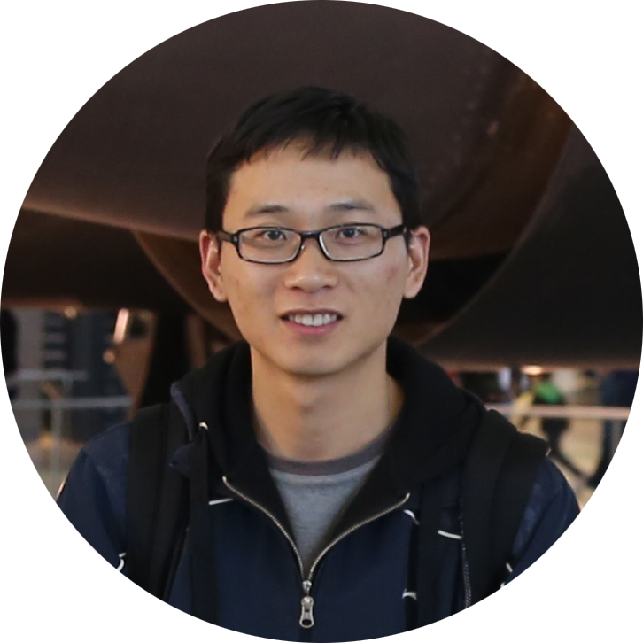

Lingyan Ran
PhD, Associate Professor
PhD, Associate Professor
National Engineering Laboratory for Integrated Aero-Space-Ground-Ocean Big Data Application Technology (ASGO),
School of Computer Science,
Northwestern Polytechnical University (NPU)
Phone: +86-17791834424
Email:

Mailing address: PO Box 886, School of Computer Science, Chang'an Campus, Northwestern Polytechnical University, Xi'an, Shaanxi, P.R. China, 710129